14/11 · bastidor
Do KV à loja: como um lançamento vira loja (Brastemp BWD16)
O PDV de um lançamento nasce do KV: a promessa da campanha vira cenário na loja, em peças de vários tamanhos.
Toque em Aprovar, Pedir ajuste ou Não publicar em cada peça. Abre o GitHub com tudo preenchido: é só tocar em Submit new issue. No ajuste, escreva o que mudar. A rotina lê sua resposta na rodada seguinte (10h35, 12h35, 14h35 e 16h35) e o selo da peça muda aqui.
14/11 · sai a partir de 12:30
Instagram · carrossel
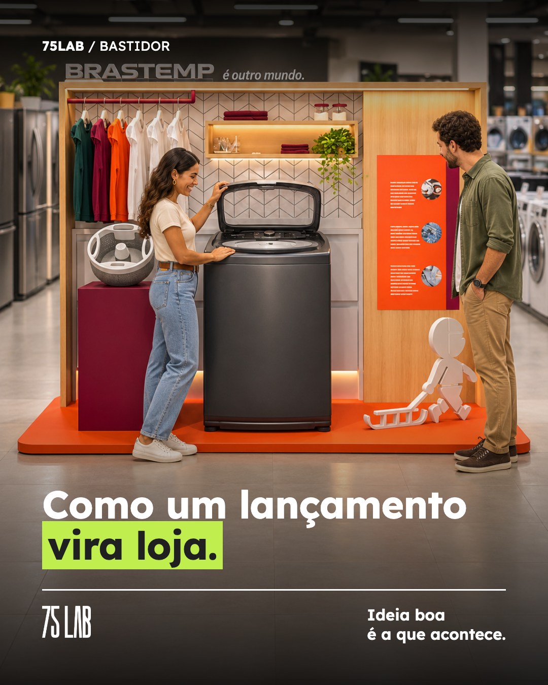
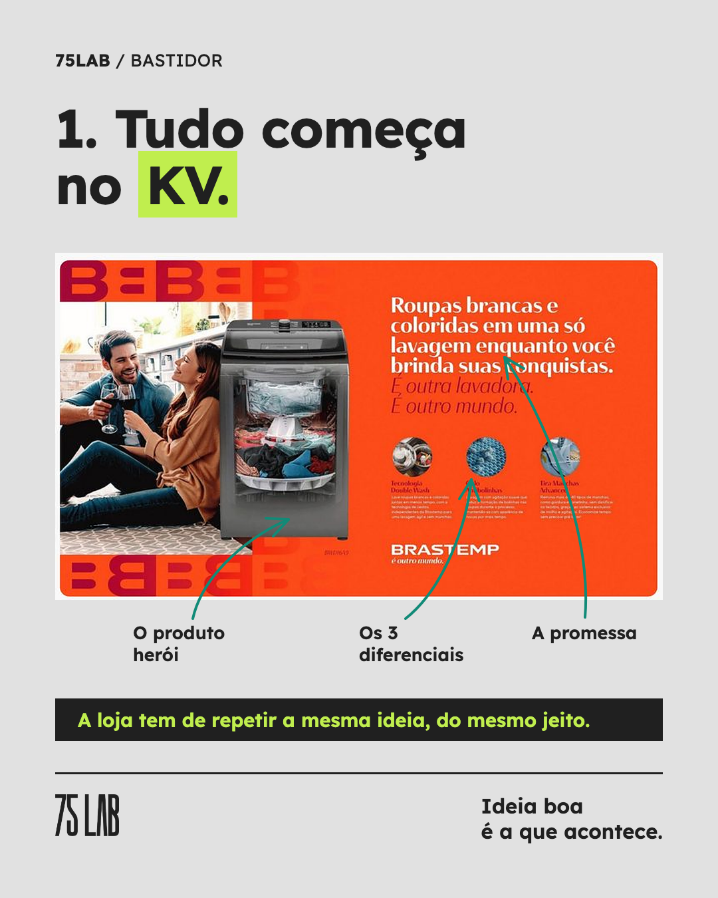
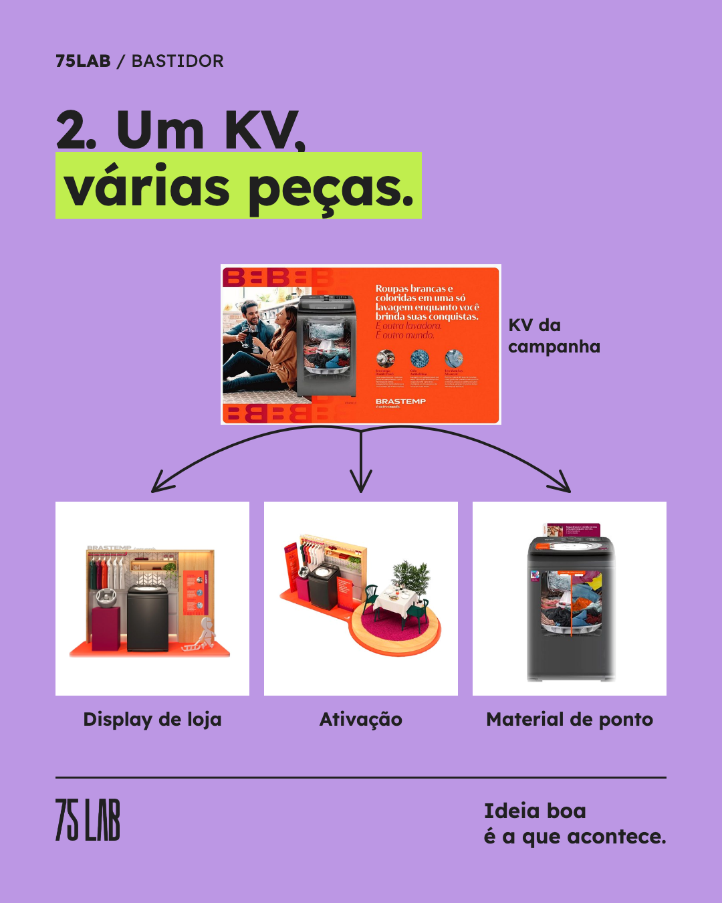
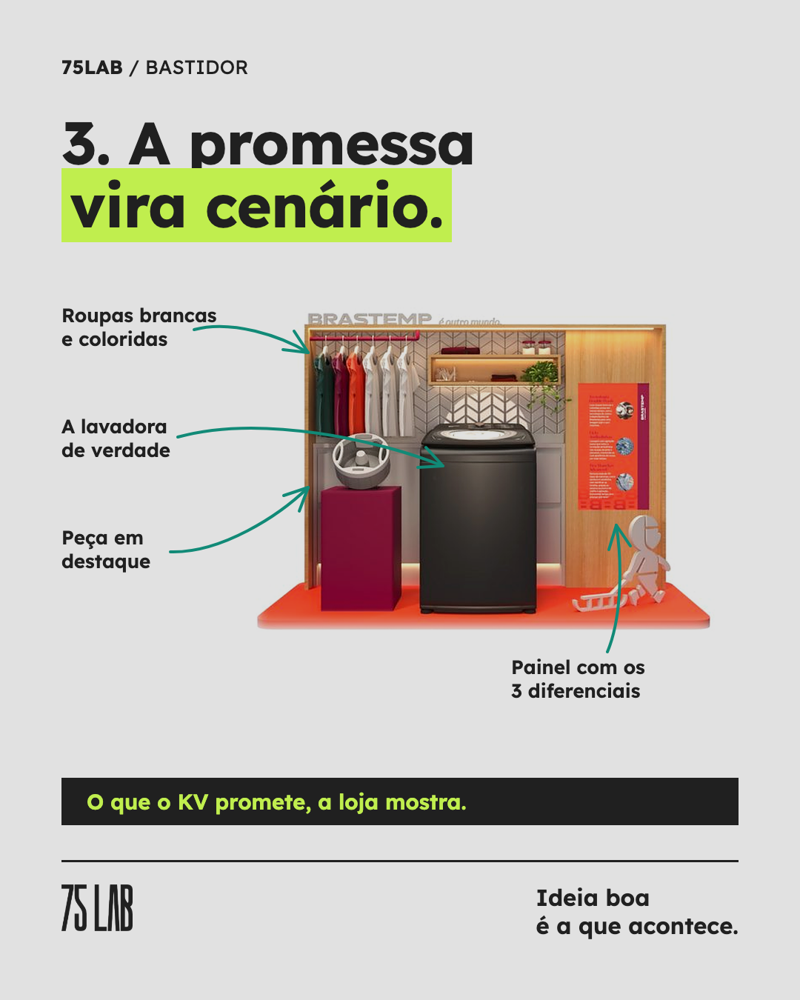
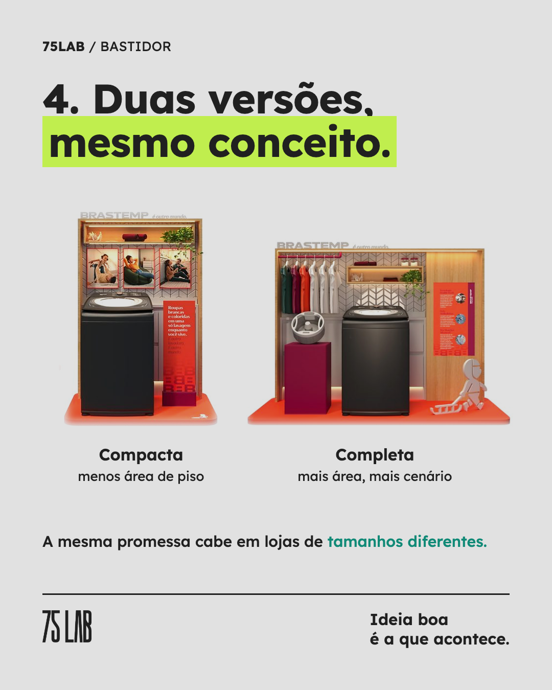
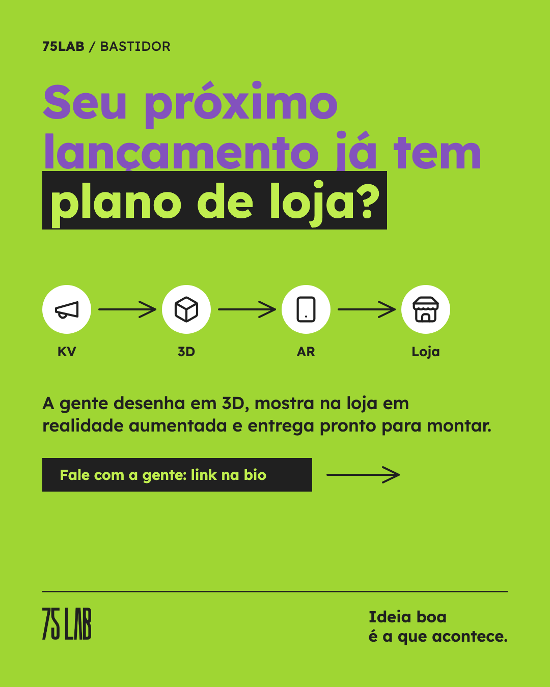
Legenda
Bastidor de um lançamento: como a lavadora Brastemp BWD16 saiu do KV e chegou na loja.
Tudo começa na campanha. O KV define a promessa ("roupas brancas e coloridas em uma só lavagem"), o produto herói e os diferenciais. O trabalho do PDV é fazer a loja repetir essa mesma ideia.
Por isso um KV vira várias peças: display de loja, ativação e material de ponto no próprio produto.
No display, a promessa vira cenário: varal com roupas brancas e coloridas, a lavadora de verdade, uma peça em destaque no pedestal e o painel com os três diferenciais. E o mesmo conceito sai em duas versões, compacta e completa, para lojas com espaços diferentes.
Arrasta para ver o caminho inteiro.
Mais projetos em 75lab.com.br/cases.html
#trademarketing #pdv #lancamento #merchandising #varejo14/11 · sai a partir de 10:30
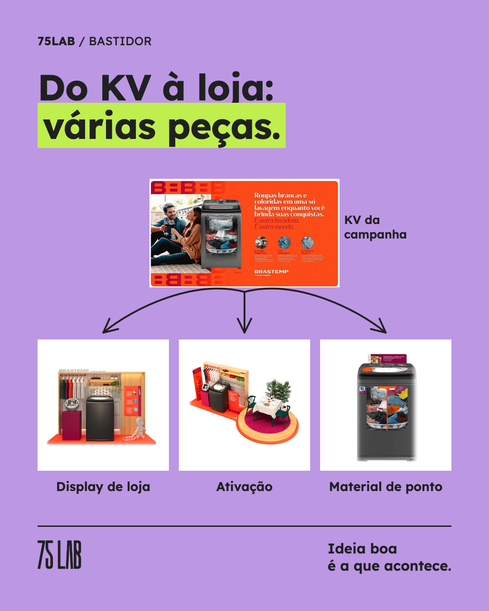
Texto da página da 75 LAB
Bastidor de um lançamento: o caminho da lavadora Brastemp BWD16 do KV até a loja.
Quem cuida de trade sabe que lançamento não acontece na campanha, acontece na loja. E a loja só convence quando repete a mesma promessa do KV.
Como esse caminho foi feito:
1. O KV define a promessa ("roupas brancas e coloridas em uma só lavagem"), o produto herói e os diferenciais.
2. Um KV vira várias peças: display de loja, ativação e material de ponto no próprio produto.
3. No display, a promessa vira cenário: varal com roupas brancas e coloridas, a lavadora de verdade e o painel com os três diferenciais.
4. O mesmo conceito sai em duas versões, compacta e completa, para lojas com espaços diferentes.
Tudo isso desenhado em 3D antes de produzir, para o time ver a peça no tamanho real.
Mais projetos em https://75lab.com.br/cases.html
#trademarketing #pdv #varejoTexto do seu perfil
Toda vez que começo um projeto de lançamento, a primeira pergunta é: qual é a promessa do KV? No lançamento da lavadora Brastemp BWD16, a promessa era "roupas brancas e coloridas em uma só lavagem". Então a loja tinha de mostrar exatamente isso. O display virou um cenário com varal de roupas brancas e coloridas, a lavadora de verdade e um painel com os três diferenciais. Do mesmo KV saíram as outras peças: ativação e material de ponto no próprio produto. E o display ganhou duas versões, compacta e completa, porque nem toda loja tem o mesmo espaço. Se o PDV do seu próximo lançamento ainda está para nascer, comece pela promessa do KV. O resto vem dela. O case está em https://75lab.com.br/cases.html #trademarketing #pdv #varejo
14/11 · sai a partir de 14:30
Reels
Legenda
Do KV à loja: como o lançamento da lavadora Brastemp BWD16 virou display, ativação e material de ponto. Case completo em 75lab.com.br/cases.html #trademarketing #pdv #lancamento #varejo
Roteiro
3.0 s · 3.6 s · 3.6 s · 4.0 s · 3.4 s · 3.6 s · Seu próximo lançamento já tem plano de loja? Projetos reais em 75lab.com.br/cases
14/11 · sai a partir de 12:30
Stories
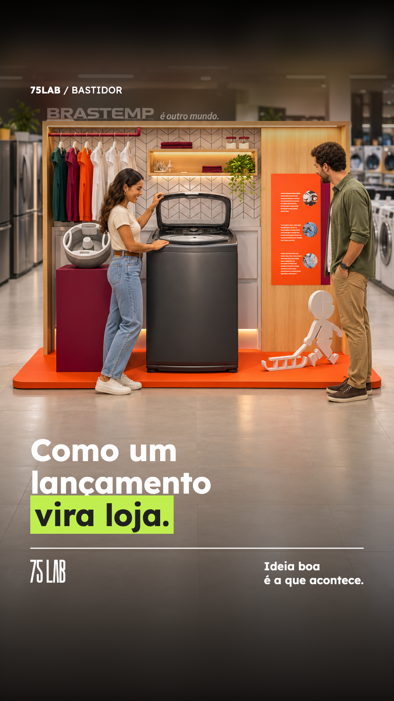
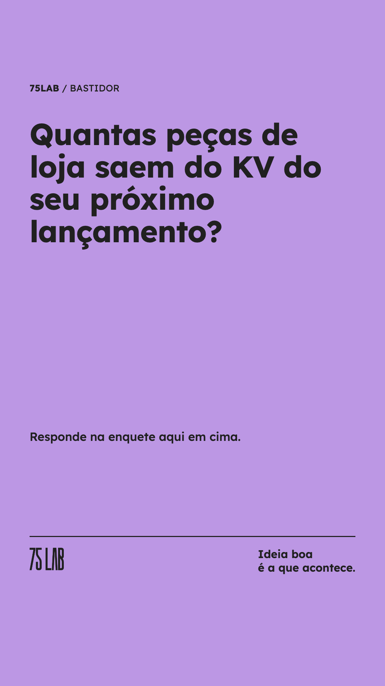
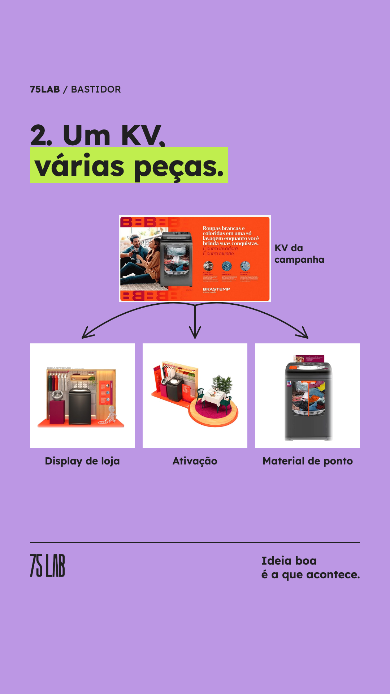
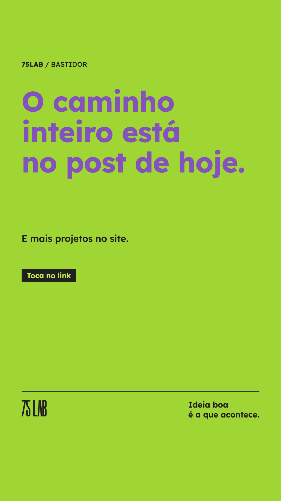
Indicação
Tela 1: sem sticker Tela 2: Enquete no meio da tela: "1 ou 2" e "3 ou mais" Tela 3: sem sticker Tela 4: Link: https://75lab.com.br/cases.html
14/11 · sai a partir de 10:30
E-mail marketing
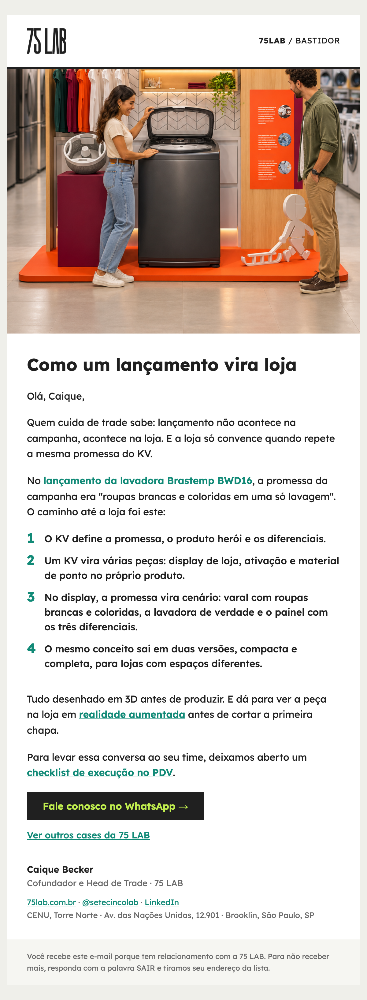
Assunto
Bastidor: como um lançamento sai do KV e chega na loja
Linha de apoio
O caminho da lavadora Brastemp BWD16, da promessa da campanha ao display de loja.
Fontes